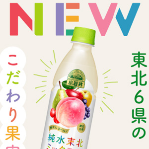
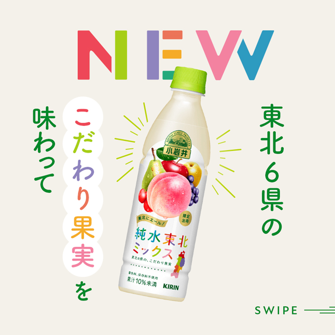
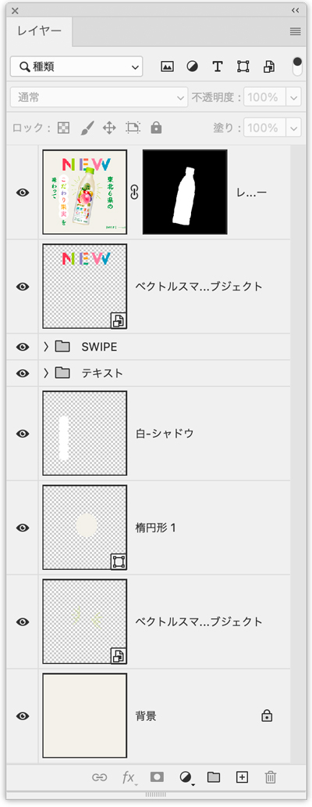
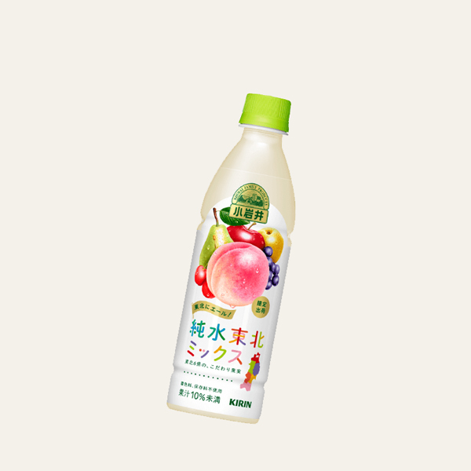
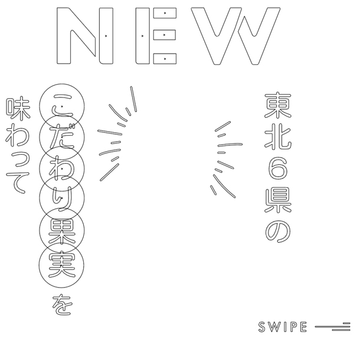
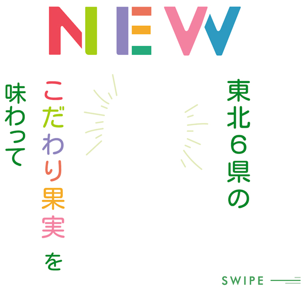
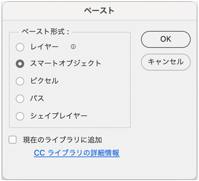

小岩井 純水東北ミックス


レイヤー構造

切り抜き
- 「オブジェクト選択ツール」を選択し、オプションバーの「被写体を選択」をクリック
- 選択範囲ができたら、「レイヤーマスク」をクリック

Illustratorデータ（スマートオブジェクト）
- Illustratorでトレース


- コピー&「スマートオブジェクト」でペースト

制作ポイント
- どこまでIllustratorで作成し、どこからPhotoshopにすべきかの判断で手順が変わります